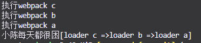
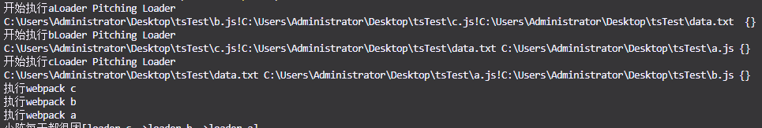
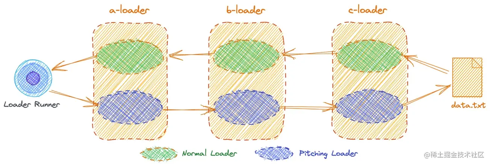

webpack5简介
入口(entry) webpack打包的入口
输出(output) webpack 输出的地方
loader
插件(plugin)
模式(mode)
浏览器兼容性(browser compatibility)
环境(environment)
入口
主要有单入口与多入口，传入的参数可以是string，array，或者object document
dependOn: 依赖于其他的文件，必须在依赖文件加载完成之后再加载，不能循环依赖
runtime：其中有依赖于其他文件的，没有自己的运行时
输出
对应的输出有单出口与多个出口
1
2
3
4
5
6
7
8
9
10
11
| output: {
filename: 'bundle.js',
filename: '[name].<[contenthash]>.bundle.js',
path: __dirname + '/dist', // 默认是这个路径，path必须是要绝对路径
library: {
name: 'bundle',
// 可以是很多其他的模块化方式，让打包后的文件可以通过require或import引入，
而不是只能通过链接引入,使用var可以定义一个全局变量，通过name.调用
type: 'amd' // 使用var可以定义一个全局的变量，通过[name].调用
}
}
|
打包后的文件，会生成一个对象，id用来标识每一个模块，标识是否es模块，将export导出的方法写入exports，并且写入缓存，在引用的时候会先判断该模块是否有缓存，如果没有先写入缓存，然后再调用
外部化
对于引入的第三方依赖，webpack会将文件的所有内容通过eval写到打包后的文件中，会导致单个文件体积过大
1
2
3
4
5
6
7
8
9
10
11
12
13
14
15
16
17
18
19
20
21
22
23
| externals: {
lodash: {
commonjs: 'lodash',
commonjs2: 'lodash',
amd: 'lodash',
root: '_',
},
// 或者写成
lodash: ['lodash']
},
------------------
import a from 'test/a'
import a from 'test/a'
externals: {
lodash: {
commonjs: 'lodash',
commonjs2: 'lodash',
amd: 'lodash',
root: '_',
},
// 或者写成
lodash: ['test/a', 'test/b', /\^test\/.+$/]
},
|
loader(处理一些非js的文件) pre,post,normal,pitching模式
1
2
3
4
5
| module: {
rules: [
]
}
|
(1)normal
1
2
3
4
5
6
7
8
9
10
11
12
13
14
15
16
17
18
19
20
21
22
23
24
25
26
27
28
29
30
31
32
33
34
35
36
37
38
39
40
41
42
43
44
45
46
47
48
49
50
51
52
53
54
55
56
57
58
59
60
61
| 执行npm init，安装webpack webpack-cli脚手架
// content:输入的内容 mapL:source-map meta：可以是任何内容
module.exports = function(content, map, meta) {
}
// c.js
function loader(content, map, meta) {
console.log('执行a文件')
content += '[loader c =>'
return module.exports = `${content}`
}
modules.exports = loader
// b.js
function loader(content, map, meta) {
console.log('执行b文件')
content += 'loader b =>'
return content
}
modules.exports = loader
// a.js
function loader(content, map, meta) {
console.log('执行a文件')
content += 'loader a]'
return module.exports = `${content}`
}
modules.exports = loader
// webpack.config.js
const path = require('path')
module.exports = {
entry: './index.js',
module: {
rules: [
{
test: /\.txt$/i,
use: ['a','b','c'] // 加载的顺序是逆序，从后往前
}
]
},
resolveLoader: {
modules: [
path.resolve(__dirname, "node_modules"),
path.resolve(__dirname, "./"),
],
},
}
// index.js
import Data from "./data.txt"
// data.txt
小陈每天都很困
执行npx webpack
|
输出：

(2)pitching
在上面的js文件中添加一下代码
1
2
3
4
5
|
loader.pitch = function (remainingRequest, precedingRequest, data) {
console.log("开始执行cLoader Pitching Loader");
console.log(remainingRequest, precedingRequest, data)
}
|

可以看到
remainingRequest:是属于请求，precedingRequest：是前置请求，data：空数据对象
我们就可以卡看到loader中pitching与normal的执行顺序了

pitching中当函数返回的不是undefined的时候，pitch会自动熔断，不自己执行下面的流程
plugin
是一个具有apply方法的js对象，用于解决loader无法解决的事情
小结
(1) webpack对require不会做处理，只队import做处理
(2) 引入的第三方依赖，可以通过配置externals来减少打包的体积
(3) 可以通过配置output中的library来声明引入的包的命名，通过配置type可以作为全局变量，umd或者amd模块加载
(4) 通过loader中的依赖，可以解析非js的文件，loader有四种模式，pre，post，normal，pitching
(5) loader本质上是一个modules.exports函数（接受content，map，meta）参数
(2)
(2)
(2)
(2)
(2)